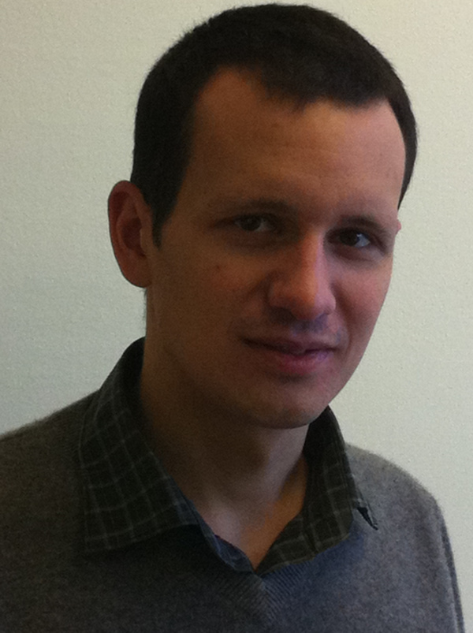
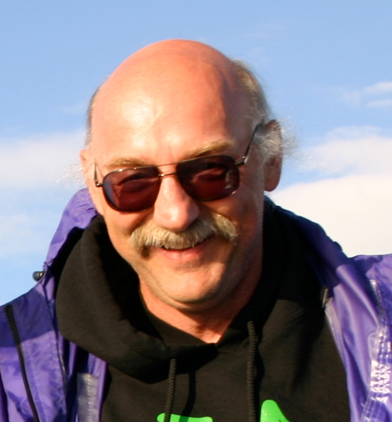

| AMMCS-2013 Venue: Wilfrid Laurier
University Campus in Waterloo, Canada |
|
|
|
|
Prof. Andy Majda apologized for not being able to attend the meeting. He asked his collaborator, Prof. Dimitrios Giannakis, to present their joint work on data-driven methods.
AMMCS-2013 Plenary Talk
Data-driven methods for dynamical systems: Quantifying predictability and extracting spatio-temporal patterns
Dimitrios Giannakis
Abstract: Large-scale datasets generated by dynamical systems arise in many applications in science and engineering. Two research topics of current interest in this area involve using data collected through observational networks or output by numerical models to quantify the uncertainty in long-range forecasting, and improve understanding of the operating dynamics. In this talk we discuss applied mathematics techniques to address these topics blending ideas from machine learning, delay-coordinate embeddings of dynamical systems, and information theory. We illustrate these techniques with applications to climate atmosphere ocean science. This is joint work with Prof. Andy Majda.

Dr. Dimitrios Giannakis is a faculty member at the Courant Institute of Mathematical Sciences, NYU. He is also affiliated with Courant's Center for Atmosphere Ocean Science (CAOS). He received BA and MSci degrees from the University of Cambridge, and a PhD degree from the University of Chicago. Prior to joining Courant and CAOS as faculty he was a postdoctoral researcher there. Giannakis' research work is at the interface between applied mathematics and climate atmosphere ocean science. His primary research interests are in geometrical data analysis algorithms and statistical modeling of complex systems. He has applied these tools in topics including idealized dynamical systems, ocean and sea ice variability on seasonal to interannual timescales, and organized atmospheric convection.

Andrew J. Majda is the Morse Professor of Arts and Sciences at the Courant Institute of New
York University. Majda's primary research interests are modern applied mathematics in the
broadest possible sense merging asymptotic methods, numerical methods, physical reasoning,
and rigorous mathematical analysis.
Majda is a member of the National Academy of Sciences and has received numerous honors and
awards including the National Academy of Science Prize in Applied Mathematics, the John von
Neumann Prize of the Society of Industrial and Applied Mathematics, and the Gibbs Prize of the
American Mathematical Society. He is also a member of the American Academy of Arts and
Science. He has been awarded the Medal of the College de France, twice, and is a Fellow of the
Japan Society for the Promotion of Science. He has received an honorary doctorate from his
undergraduate alma mater, Purdue University.
In the past several years at the Courant Institute, Majda has created the Center for Atmosphere
Ocean Science with a multi-disciplinary faculty to promote cross-disciplinary research with
modern applied mathematics in climate modeling and prediction. Majda's current research
interests include multi-scale multi-cloud modeling for the tropics, reduced stochastic and
statistical modeling for climate, and novel mathematical strategies for prediction and data
assimilation in complex multi-scale systems.
Majda's published books include
- "Compressible Fluid Flow and Systems of Conservation Laws in Several Space Variables" by Springer-Verlang,
- "Vorticity and Incompressible Flow" with A. Bertozzi by Cambridge University Press,
- Majda's lecture notes for the Courant Lecture
Note Series of the American Math. Society
- "Introduction to PDE's and Waves for the
Atmosphere and Ocean," also for the CRM monograph series "Information theory and
Stochastics for Multiscale Nonlinear Systems," with M. Grote and R. Abramov, by American
Mathematical Society,
- and recently, "Nonlinear Dynamics and Statistical Theories for Basic
Geophysical Flows" with Xiaoming Wang by Cambridge University Press.
He has a new
forthcoming book with John Harlim, "Filtering Complex Turbulent Systems" by Cambridge
University Press.
|